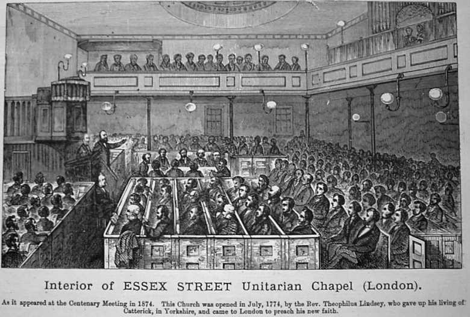
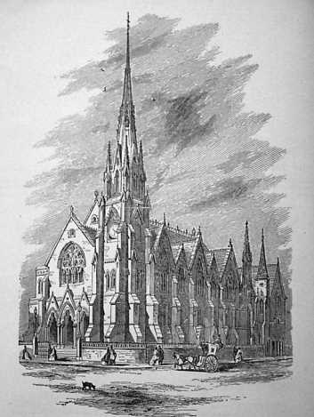
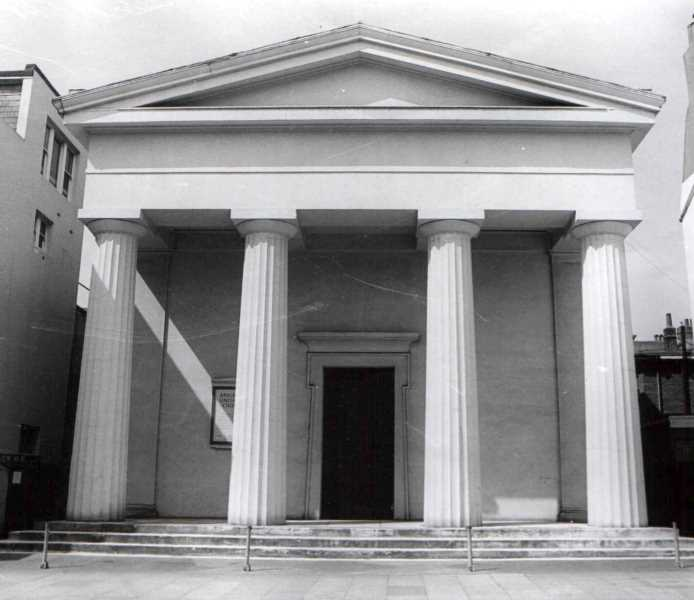
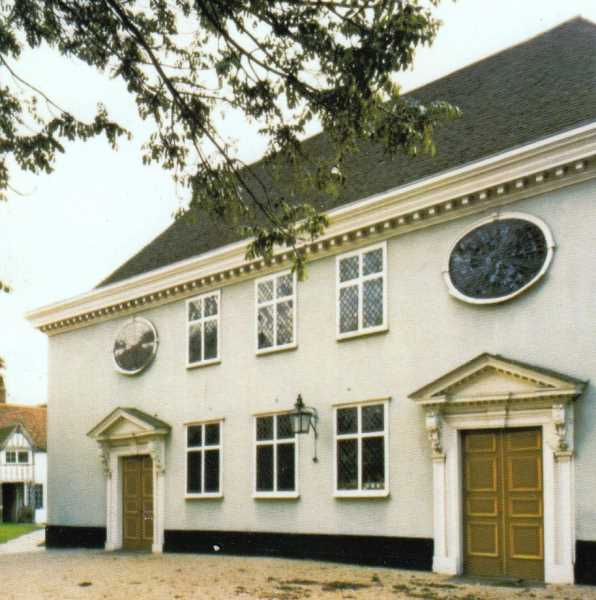
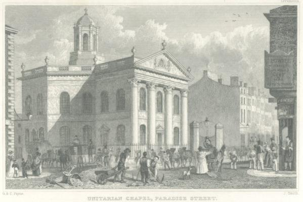
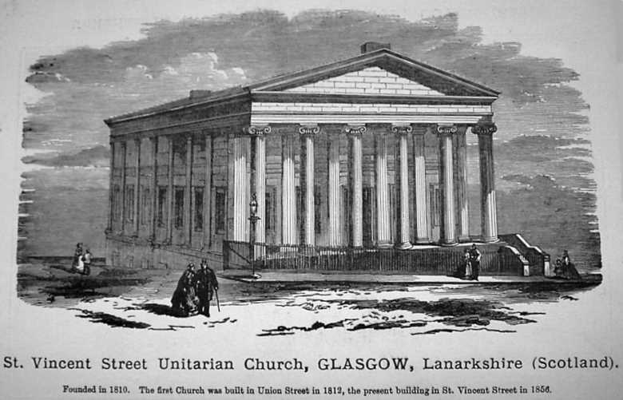
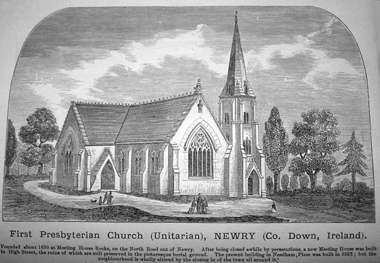
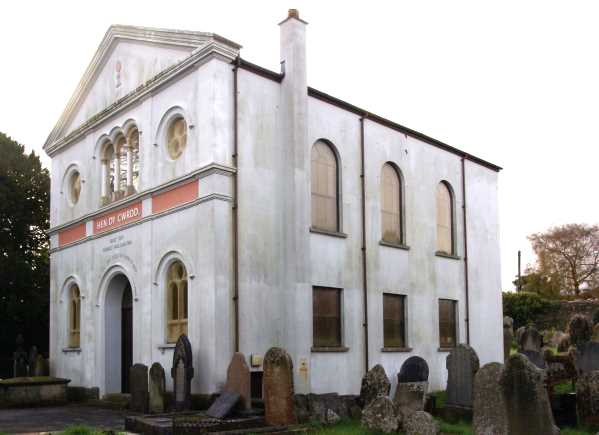
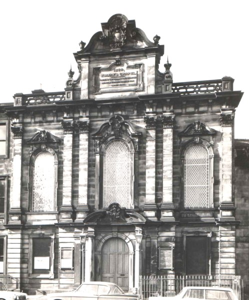

Unitarian Christian Timeline
1 - 431
432 - 1690
1691 - 2023
Gallery
Contact Us
This gallery shows a selection of Unitarian Meeting Houses in Great Britain.
Courtesy of the Unitarian Historical Society.
        